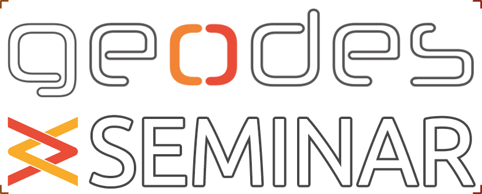

{% assign seminars = site.data.events.seminars %}

The GEODES Seminar aims to bring together members of the group in a semi-formal setting with a semi-regular timing.
We'd especially love to see students at all levels reporting their progress, entertain presentations on core or adjacent topics, host dry-runs before conferences, etc.
These events follow an in-person format. By that, we hope to re-establish the everyday social aspects of the research group in a post-COVID world.
Format: In person
Location: Pavillon André-Aisenstadt
Upcoming talks
{% for seminar in seminars %}
- {{seminar.date}}{% if seminar.time %}, {{seminar.time}}{% endif %}
{% if seminar.location %}{{seminar.location}}
{% endif %}
{{seminar.presenter}}
{{seminar.title}}
{% endfor %}